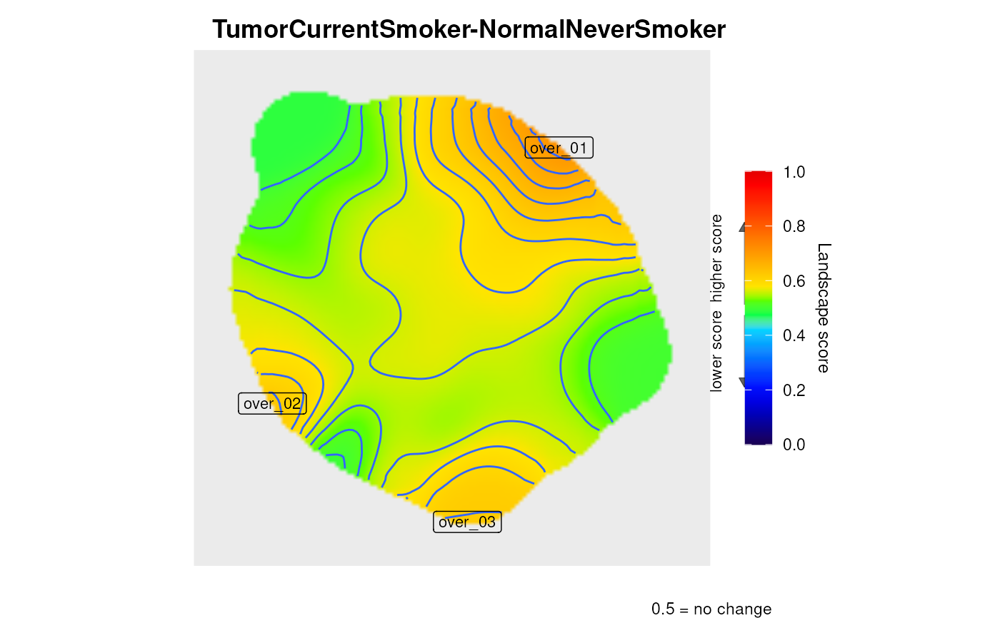
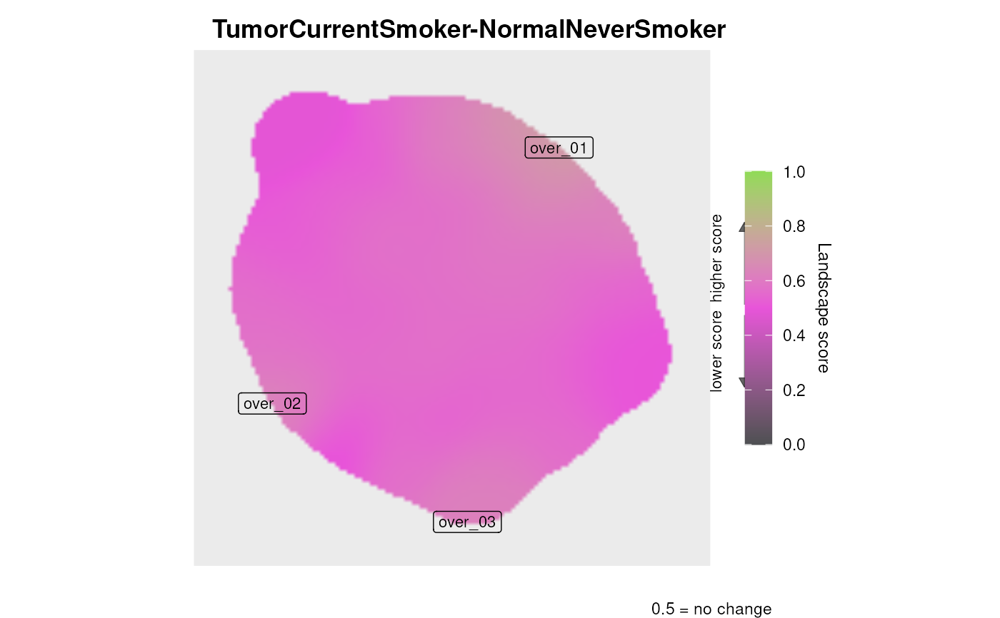

This is the Levi script mode. It allows you to create the integration of networks and gene expression levels as batch processing
levi(
expressionInput,
fileTypeInput,
networkCoordinatesInput,
networkInteractionsInput = NA,
geneSymbolInput,
readExpColumn,
contrastValueInput = 50,
zoomValueInput = 50,
resolutionValueInput = 50,
smoothValueInput = 50,
expressionLog = FALSE,
contourLevi = FALSE,
setcolor = "default",
plot3d = FALSE,
n_perm = 0,
sig_level = 0.05,
perm_side = c("both", "over", "under"),
signal_mode = c("ratio", "logfc", "zscore"),
logfc_k = 1,
p_adjust_method = "BY",
region_threshold = 0.1,
region_min_cells = 3L,
inference_unit = c("region", "cell"),
perm_strata = NULL,
edge_weighting = c("midpoint", "degree", "none"),
.parsed_network = NULL,
.draw = TRUE
)File path to gene expression data (tab-delimited),
OR a data.frame / matrix directly. When passing a
data.frame, it must contain a gene identifier column and at least
one expression column. Objects from leviFromDESeq2(),
leviFromEdgeR(), leviFromLimma(), and
leviFromSeurat() are accepted directly.
Format of the biological network, given as one of
"dat" (Medusa), "dyn" (RedeR), "net" (Pajek) or
"stg" (STRING/STITCH). This is the format code, not a file name:
the network itself is passed in networkCoordinatesInput.
File path to the biological network
carrying the node coordinates, OR a data.frame with them directly
(as returned in $nodes by leviFromSTRING()). The format
must match fileTypeInput.
Parameter available only to STRING/STITCH data format. It allows the user to load the interaction data file of the network.
Column name from gene expression data containing the identifier (gene Symbol, Entrez ID, EMSEMBL, etc).
Variable from readExpColumn function containing the comparisons of the experiments
Numeric value controlling how tightly the
landscape hugs the network. The landscape is built by normalised
convolution, and this parameter sets the occupancy threshold below which a
grid cell is considered background and returned as NA: higher values
give a tighter silhouette. The variable range is 0 to 100. The default
value is 50.
Numeric value for image zoom, from 0 (widest frame) to 100 (tightest). The grid always leaves enough margin around the network for the smoothed silhouette to fit, whatever the smoothing and contrast; the zoom adds up to 20% of the network extent on top of that margin. The default value is 50.
Numeric value for image resolution. The variable range is 0 to 100. The default value is 50.
Numeric value for image smoothness. Sets the width
(\(\sigma\)) of the Gaussian kernel used by the normalised convolution,
scaled relative to resolutionValueInput so that changing the
resolution does not change the apparent smoothing. Unlike in levi
< 2.0.0, this parameter no longer affects the value scale, only the
level of detail. The variable range is 0 to 100. The default is 50.
Logical. In ratio mode, TRUE back-transforms log2 expression with 2^x before calculation. Ignored in logfc and zscore modes, which use log-scale columns directly. Default FALSE.
Logical variable to allow contour lines. The default is
FALSE.
Select the color palette to build the heatmat. There is two options the **Multicolor** has 20 color levels combined. The **Two colors** has two types of color and the options available are: *purple_pink*, *green_blue*, *blue_yellow*, *pink_green*, *orange_purple*, *green_marine*.
Logical. When TRUE, an interactive 3D surface plot is
additionally generated using plotly. Requires the plotly
package. Default is FALSE.
Integer. Number of node-label permutations, default 0. Measured node expression pairs are shuffled together; missing positions stay fixed and edge signals are recalculated. Tests spatial association conditional on the chosen network/layout, not differential expression between replicates. Raw Monte Carlo p-values are (count + 1)/(n_perm + 1). A larger number improves resolution but does not establish biological validity.
Numeric (0-1). Significance threshold for the contour
overlay. A contour is drawn wherever the p-value equals sig_level.
Default is 0.05.
Character. Which direction to test when
n_perm > 0. Options:
"both"(default) dashed contour for over-expression + dotted for under-expression.
"over"Only the dashed contour.
"under"Only the dotted contour.
result$pvalues is a list with $over and $under
matrices when inference_unit = "cell", or NULL when
n_perm = 0 or in regional mode, where perm_side selects
which significant regions are outlined.
Character. How raw expression values are converted to the landscape score in \([0,1]\). Choose based on your data type:
"ratio"(default) \(Test / (Test + Control)\), without
min-max normalisation; equal nonzero values map to 0.5. Best for linear-scale data: raw counts,
TPM, FPKM, linear proteomics LFQ. Also correct when
expressionLog = TRUE is used to back-transform log2 microarray
intensities into linear scale.
"logfc"Sigmoid transformation:
\(1 / (1 + e^{-k \cdot \text{logFC}})\) where
\(k\) = logfc_k and
\(\text{logFC} = Test - Control\) for two log-scale columns,
or the supplied logFC in single-column mode.
Score 0.5 = no change; > 0.5 = up-regulated; < 0.5 = down-regulated.
Best for: RMA microarray, VST/rlog from DESeq2,
log2 proteomics, scRNA-seq avg_log2FC
(single-column mode with readExpColumn("logFC-logFC")).
"zscore"Z-scores the logFC distribution then maps to
\([0,1]\) via pnorm(). Score 0.5 = mean logFC of
measured nodes and derived edge support points; tails approach 0/1.
This is relative within each comparison and uses mean/SD, not a
robust estimator. It does not encode an absolute no-change baseline.
Numeric. Steepness of the sigmoid in signal_mode =
"logfc". Larger values make the transition from 0 to 1 sharper (more
contrast between up/down). Default is 1. Typical range: 0.5-3.
Use k = 0.5 for datasets with large logFC values (e.g., scRNA-seq
fold-changes often range +/-5) and k = 2 for tight fold-changes
(e.g., +/-1 in microarray).
Multiple-testing correction used only when
inference_unit = "cell", applied jointly to both
directional families over occupied grid cells in each comparison. Default
"BY" accommodates arbitrary dependence; "BH", "holm", "none" and other
methods accepted by stats::p.adjust are available. Contours and
pvalues use these adjusted values; raw_pvalues is unadjusted.
Positive deviation from the neutral score 0.5 used to define a regional cell. The default 0.1 identifies cells >= 0.6 or <= 0.4. This parameter describes regions and does not assign statistical significance.
Minimum number of eight-connected grid cells retained as a region. Default is 3.
Either "region" (default) or "cell" (legacy). With "region" and n_perm > 0, regions are redetected in every node-label permutation and the observed mass of each region is compared with the maximum mass across all regions and both directions. Results are in regions$summary$PSpatial and $Significant; regions$null_max_mass stores the null maxima. This controls the search under the global exchangeable spatial null, conditional on network/layout. It does not establish significance of individual cells or genes, precise boundaries, or differences between biological replicates. pvalues and raw_pvalues are NULL in regional mode; the 2D plot labels areas rather than named gene peaks and white boundaries mark regions passing sig_level. The 3D plot shows the descriptive surface without regional boundaries.
"cell" tests every occupied grid cell separately and adjusts the two
directional families jointly with p_adjust_method. Cells are strongly
correlated, so that adjustment is very conservative; the mode is kept for
the graphical interface and for comparison with earlier versions. See
vignette("levi_inference") for which null answers which question.
Optional vector defining exchangeability strata for the node-label permutation. A named vector is matched to network gene identifiers; an unnamed vector must follow network-node order. Signals are shuffled only among measured nodes in the same stratum. Useful for bins of mean expression, detection rate or network degree. Default `NULL` permutes all measured nodes.
Character. How the edge midpoints enter the
landscape. "midpoint" (default, the historical behaviour) gives
every node and every edge midpoint the same weight, so a hub of degree
\(d\) surrounds itself with \(d\) support points and dominates its
neighbourhood. "degree" weights the midpoint of edge \((i, j)\)
by \((1/d_i + 1/d_j)/2\), so the midpoints around any node add up to
one whatever its degree. "none" drops the midpoints and smooths
the node values alone. All three keep the same coordinates, silhouette
logic and permutation nulls; the choice is recorded in
metadata$edge_weighting and reused by the sample-label tests.
Internal controls used to reuse a parsed network and suppress repeated drawing in resampling workflows.
Invisibly returns a list (or a list of such lists, one per
comparison, when readExpColumn carries more than one) containing:
Name of the comparison (e.g. "Tumor-Normal").
data.frame with the plotted surface in long format
(Var1, Var2, z). Cells outside the network
silhouette are NA, not 0. Required by
leviDiff.
data.frame with one row per network node
(Gene, X, Y, LandscapeScore,
Rank), ordered from the highest score to the lowest.
data.frame with the automatically detected peaks and
valleys (Type, NearestGene, MatrixRow,
MatrixCol, Score).
list with the $over and $under
permutation p-value matrices in cell mode, or NULL when
n_perm = 0 or inference_unit = "region".
Unadjusted directional permutation p-values, or NULL.
List with summary (one row per eight-connected
area) and cells (member grid cells). In regional inference mode,
the summary also contains PSpatial and Significant;
null_max_mass and inference record the null and method.
Otherwise regions are descriptive.
Signal meaning, parameters, network, coordinates, missing
genes, RNG state before calculation and software versions. Call
set.seed() before levi() for reproducibility.
the ggplot object, also drawn on the active device.
the plotly surface when plot3d = TRUE, otherwise
NULL. Like plot, it is also shown when produced. To
save it from a chosen viewpoint, set the camera and write the file:
p <- plotly::layout(result$plot3d, scene = list(camera = list(
eye = list(x = 1.6, y = -1.6, z = 0.9))))
htmlwidgets::saveWidget(p, "surface.html") # interactive, keeps the view
leviSave3D(p, "surface.png") # static; needs kaleido
eye is the camera position relative to the centre of the
surface; larger values move it away. Interactively, rotate the surface
and use the camera icon of the plotly toolbar to save the current
view as PNG.
Integrates the biological network and gene expression levels (or other type of data). In single-column ratio mode, the score is abundance/(abundance + 1), with no control comparison. Missing measurements and undefined ratios are assigned 0.5. Surface, scores, peaks and tests use the same Gaussian-smoothed signal. A gene's smoothed score also reflects its neighbours, so a locally unchanged gene can receive a non-neutral score.
Every edge contributes a support point at its midpoint, carrying the mean
of its two endpoints. With the default edge_weighting = "midpoint"
a hub with many edges places many support points around itself and
dominates the local average: the landscape is implicitly weighted by
degree. The node-label permutation test keeps the network fixed, so this
weighting is part of its null and does not bias the inference, but it does
shape what the eye reads on the figure. edge_weighting = "degree"
removes that emphasis while keeping the edges as carriers of neighbourhood
signal; "none" smooths the nodes alone.
template_network <- file.path(system.file(package="levi"),"extdata",
"medusa.dat", fsep = .Platform$file.sep)
template_expression <- file.path(system.file(package="levi"),
"extdata","expression.dat", fsep = .Platform$file.sep)
multicolor <- levi(networkCoordinatesInput = template_network,
expressionInput = template_expression, fileTypeInput = "dat",
geneSymbolInput = "ID",
readExpColumn=readExpColumn("TumorCurrentSmoker-NormalNeverSmoker"),
contrastValueInput = 50, resolutionValueInput = 50, zoomValueInput = 50,
smoothValueInput = 50, expressionLog = FALSE, contourLevi = TRUE)
#> There are 1 nodes without expression value, see log in path: /tmp/RtmpNc6BNs/TumorCurrentSmoker-NormalNeverSmoker/levi.log

twocolors <- levi(networkCoordinatesInput = template_network,
expressionInput = template_expression, fileTypeInput = "dat",
geneSymbolInput = "ID",
readExpColumn = readExpColumn("TumorCurrentSmoker-NormalNeverSmoker"),
setcolor = "pink_green", contourLevi = FALSE)
#> There are 1 nodes without expression value, see log in path: /tmp/RtmpNc6BNs/TumorCurrentSmoker-NormalNeverSmoker/levi.log
